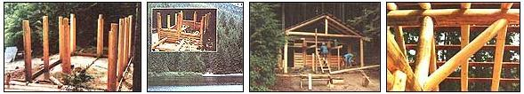

on two sides and lined carefully. Then the fill logs were shaped and fit info place. The plate logs tie the tops of the uprights together and serve as bearing beams for the roof rafters. The ridgepole is supported by vertical king posts and diagonal struts.